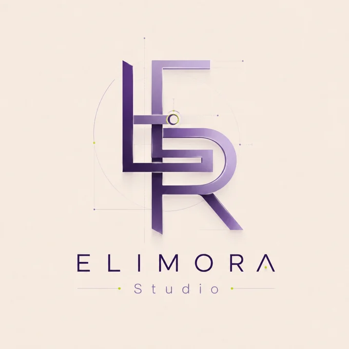

Помогаю сделать
бизнес видимым.
Я Эльвира, автор ELIMORA Studio. Шесть лет работаю с профилями компаний в Картах, создаю визуальные материалы и сайты.
Каждый бизнес — отдельный мир. Мне важно разобраться в его предложении, найти характер и собрать информацию так, чтобы посетителю было понятно, что он может получить.
Использую ИИ для анализа и создания креативов. Инструменты помогают в работе, а задачу, содержание и визуальное решение определяю под конкретный проект.
Предпочитаю разовые проекты с понятным составом, согласованным сроком и одним кругом правок.
Начнём с вашей задачи ↗